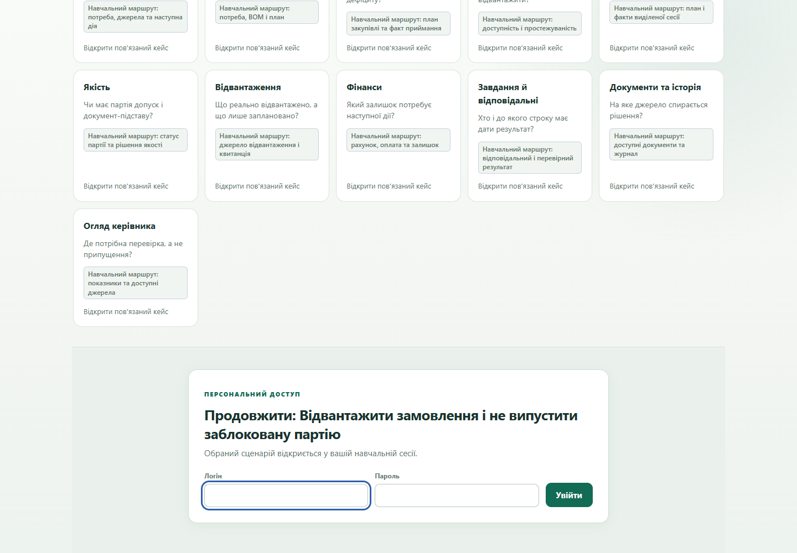
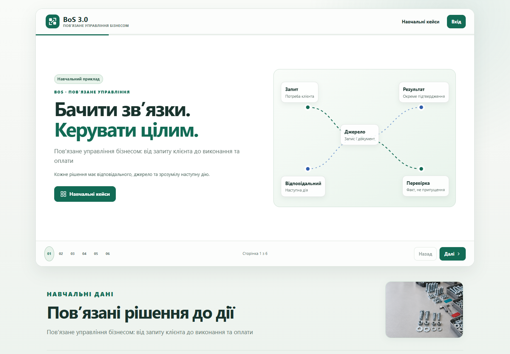
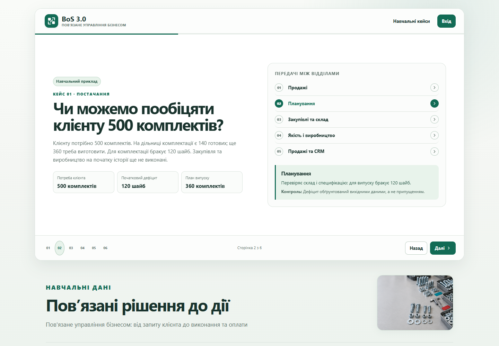
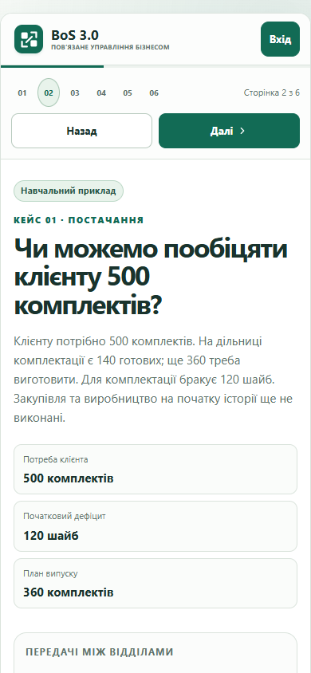
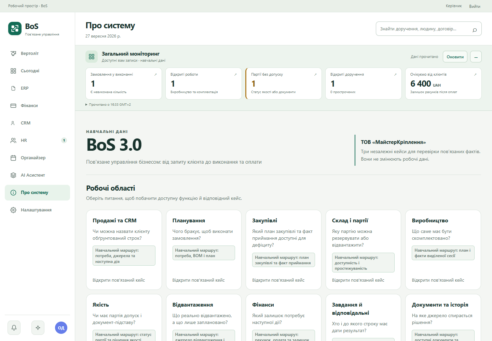
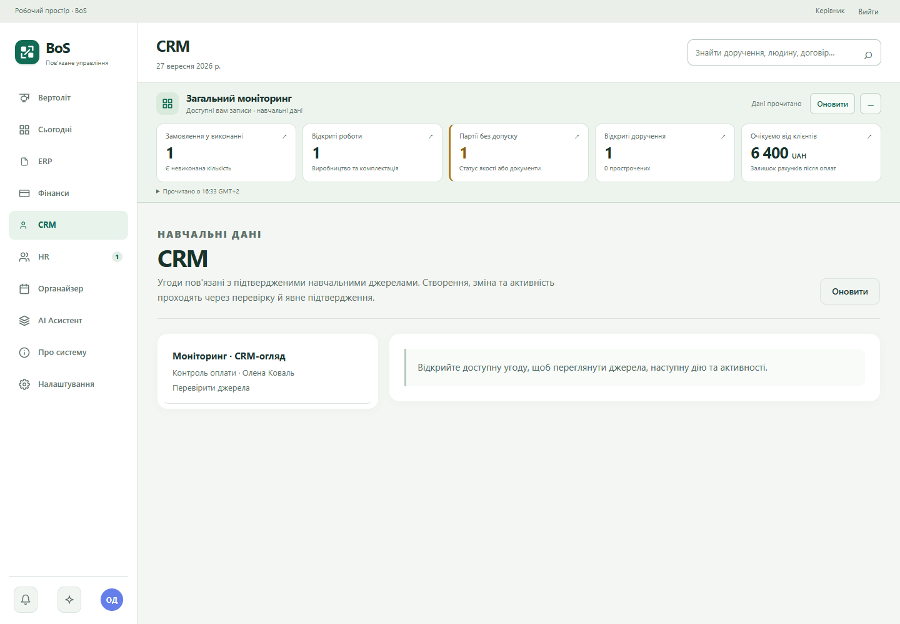
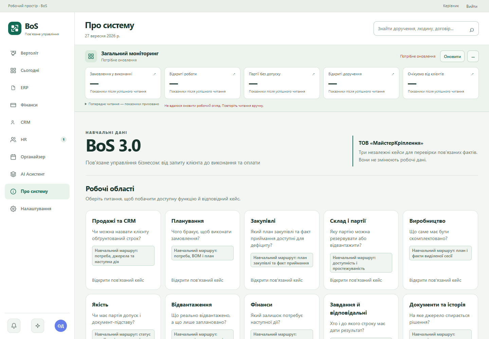
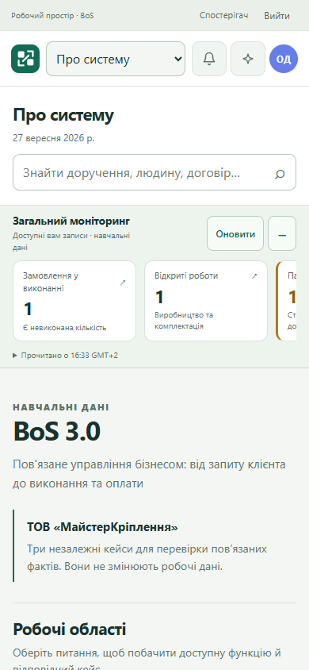

BoS 3.0 · локальное доказательство дизайна
Брошюра и монитор: визуальный стенд
Восемь кадров принятого целевого прогона. Имена файлов сохранены без изменений; изображения открываются в полном размере.
Граница доказательства. Это офлайн-визуальная проверка на синтетических данных. Рабочий сервер не переключён; пакет не подтверждает backend, БД, развёртывание или готовность релиза. Монитор читает отдельный защищённый снимок, поэтому его время может отличаться от другого обзора.







